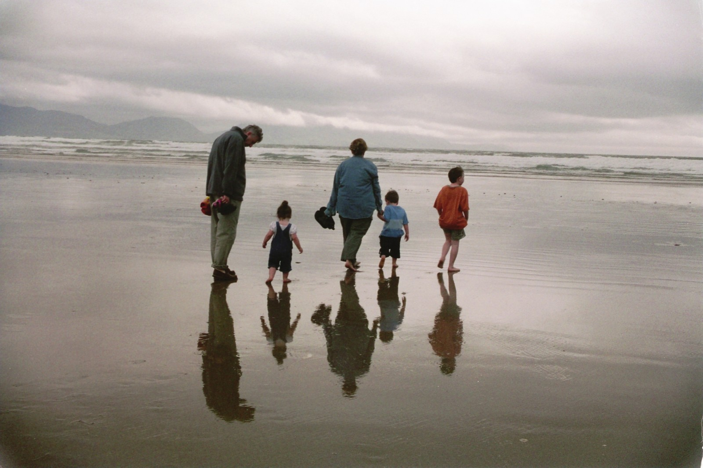

About The Founder

Rough Beginnings
As a teen in the South Bronx, Nicki Botili grew up in a dog eat dog world. Having to think quick on his feet and constantly defend himself and his younger brother Joseph, fighting wasnt a choice, but a neccessity. At age 17, he joined a local MMA training facility and found a release he never thought possible. Choosing to go after a spot in the pros, he climbed through the ranks and quickly became a neighborhood legend.

The Come Up
After escalating through the ranks so rapidly, Nicki quickly made a name for himself in his industry. Eventually moving on to the UFC he started his professional career as a world renowned fighter. Nicki ended his career with an impressive record of 24-0. Fighting some of his childhood heros along the way has been one of the greatest honor's he has ever recieved.

The Desire To Learn
After such a successful MMA career, Nicki's following was huge. People would line up for days at a time for a chance to be trained by the famed fighter. He decided to capitalize on this by creating The Infinity Dojo. The purpose was not only to make seasoned and disciplined fighters, but to teach self control, and to keep kids off of the streets. In the last 5 years the size of the school has doubled and keeps on steadily increasing in size.

Settling Down
Nicki Botili is now married to his beautiful wife of 10 years Pamela Botili, together they have 3 young children, Zach, Nicholas, and Samantha. They plan to live in the Bronx Area and continue to support their comunity. He continues to train young ambitious upcomers in The Infinity Dojo, and feels that he has found his new calling in life. To create a ferocious new generation.